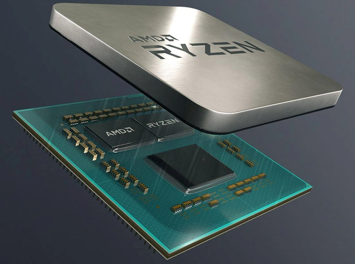
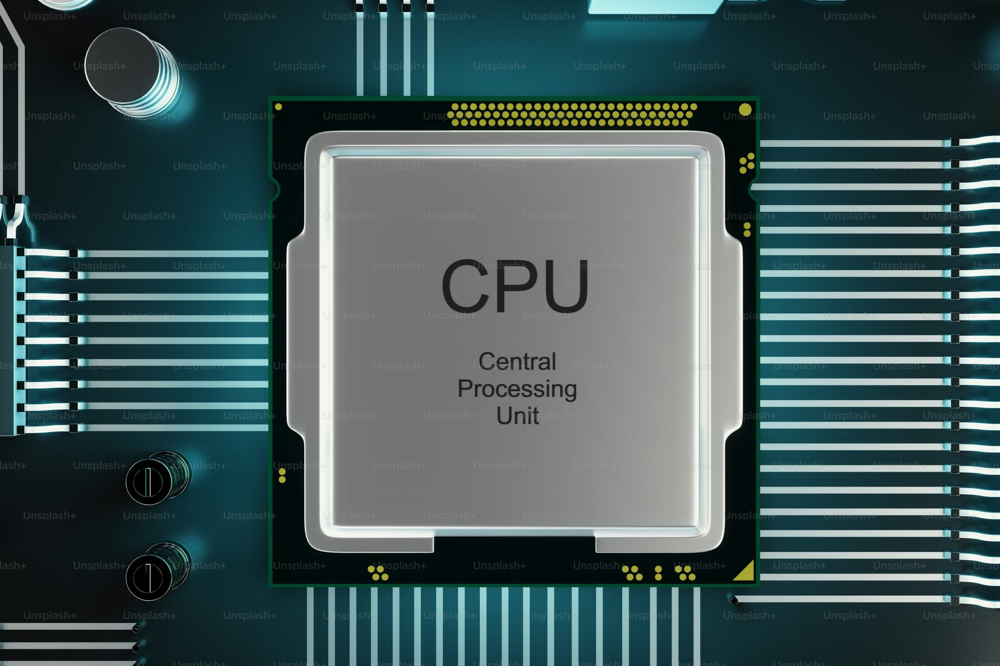

O que é a CPU?
A CPU(Unidade de Processamento Central, sigla do inglês para "Central Processing Unit"), é aquilo que como leigos, chamamos de "Processador", que funciona como o cérebro do computador.

Para o que ela serve?
A CPU, como cérebro, serve para realizar cálculos matemáticos e principalmente lógicos, em seu fundamento, toda a informação que passa pela CPU que é transmitida através da Placa-Mãe, é em sua base eletricidade pura, toda a informação é passada através de código binário(1 ou 0, ligado ou desligado), a partir dessa informação em binário, o Processador envia sinais elétricos para o dispositivo de armazenamento que está com o Sistema Operacional(SO), principalmente utilizando os registradores, memória RAM e interrupcões.
Informação adicional:
O que são os "Registradores"?
Registradores da CPU são as memórias mais rápidas e pequenas situadas dentro do próprio processador, funcionando como áreas de armazenamento temporário ultrarrápido para dados e instruções que estão sendo processados ativamente. Eles fornecem os dados diretamente para a Unidade Lógica e Aritmética (ULA) na velocidade máxima de trabalho do computador.
| Registrador | Função |
| Contador de Programa (PC) | Armazena o endereço da próxima instrução a ser executada. |
| Registrador de Instrução (IR) | Armazena a instrução atualmente sendo executada. |
| Registradores de Dados | Armazenam dados temporários para operações em andamento. |
| Registradores de Endereço | Armazenam endereços de memória para acesso a dados ou instruções. |
| Esses registradores são essenciais para o funcionamento eficiente da CPU, permitindo acesso rápido a dados e instruções durante o processamento. | |
O que é a memória RAM?
A memória RAM (Random Access Memory ou Memória de Acesso Aleatório) é um componente volátil de alta velocidade que atua como "memória de curto prazo" do computador ou smartphone. Ela armazena temporariamente os dados dos programas em execução e arquivos abertos, permitindo que o processador acesse essas informações rapidamente.
O que é o Sistema Operacional?
Um sistema operacional(SO) é o software fundamental que gerencia os recursos de hardware (processador, memória, armazenamento) e software de um computador, smartphone ou outro dispositivo. Ele atua como uma interface intermediária entre o usuário e a máquina, permitindo o funcionamento de aplicativos e o controle dos componentes físicos.
Como ela opera?
Uma CPU opera através do ciclo de instrução: busca a próxima instrução da memória via contador de programa, decodifica-a na unidade de controle para determinar a operação, executa-a na ALU (realizando cálculos ou lógicas com registros internos), e armazena os resultados na memória ou registros, atualizando o contador para repetir o processo. Componentes como unidade de controle, ALU, registros e cache trabalham em conjunto para processar dados em paralelo ou com múltiplos núcleos, medindo velocidade em GHz, com arquiteturas como x86 ou ARM variando conforme o hardware.

Como montar a CPU?
- Abra a trava do soquete na placa-mãe.
- Alinhe o triângulo dourado do processador com a marca no soquete.
- Encaixe o processador com cuidado e feche a trava para fixar.
- Coloque pasta térmica no topo da CPU e espalhe-a.
- Encaixe o cooler/ventoinha corretamente.
- Conecte o cabo do cooler ao conector da placa-mãe.